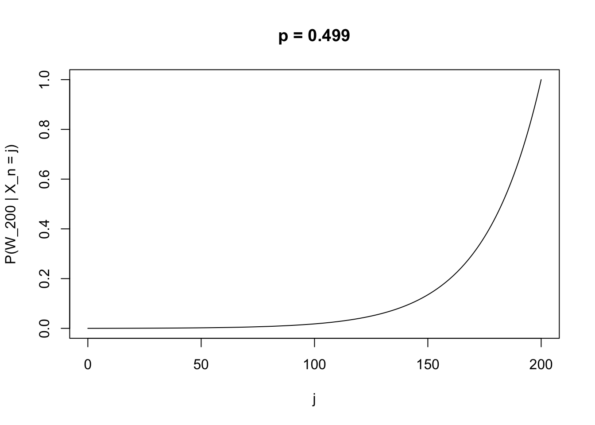

This is a classic probability problem equivalent to a simple random walk on the nonnegative integers. The set-up is that a gambler plays a game where on each play, they win one dollar with probability \(p\) and lose one dollar with probability \(1-p\). They keep playing until either they go broke or win \(k\) dollars. What is the probability that they leave a winner?
The sample space in this problem is all possible sequences of plays. This is a big collection, and we won’t be able to resolve the probabilities of events by counting arguments. However, we do know, given that the gambler has \(j\) dollars after some play, their possible fortune at the next play and the associated probabilities; this information can be used to resolve the problem.
Define \(X_n\) to be the gambler’s fortune after \(n\) plays, for \(n = 0, 1, 2, \dots\); \(X_n = j\) defines the event that the gambler has \(j\) dollars at play \(n\), for each \(j\) and \(n\). The problem set-up is that for every \(n, j\): \[
P(X_{n + 1} = x \;| X_n = j)
= \begin{cases}
p, &x = j + 1 \\
1 - p, &x = j - 1
\end{cases}
\]
Now we are interested in the probability that the gambler wins \(k\) dollars; denote this event by \(W_k\). This will change over the course of play and depend on how much they have at any given time. So consider: \[
a_j = P(W_k \;| X_n = j)
\qquad\text{for each } j = 0, \dots, k
\]
Note that \(a_0 = 0\), since the gambler cannot win if they have no money left to play (i.e., \(W_k \cap \{X_n = 0\} = \emptyset\) for every \(n\)), and \(a_k = 1\), since if the gambler has \(k\) dollars they have won (i.e., \(W_k \supset \{X_n = k\}\) for every \(n\)). Now, the probability of winning depends only on the most recent play; the plays before are irrelevant. Thus, \(P(W_k \;| X_{n + 1}, X_n) = P(W_k \;| X_{n + 1})\) (This is known as the Markov property.) Using the law of total (conditional) probability (see HW3 for a proof), we have that for each \(j\): \[
\begin{align*}
P(W_k \;| X_n = j)
&= P(W_k \;| X_{n + 1} = j + 1) P(X_{n + 1} = j + 1\;| X_n = j) \\
&\qquad + P(W_k \;| X_{n + 1} = j - 1) P(X_{n + 1} = j - 1\;| X_n = j)
\end{align*}
\] And therefore \(a_j = pa_{j + 1} + (1 - p)a_{j - 1}\). Some rearrangement yields that: \[
a_{j + 1} - a_j = (a_j - a_{j - 1})\left(\frac{1 - p}{p}\right)
\]
Since \(a_0 = 0\), \(a_2 - a_1 = a_1\left(\frac{1 - p}{p}\right)\), and then by recursion we obtain: \[
a_{j + 1} - a_j = a_1 \left(\frac{1 - p}{p}\right)^j
\qquad j = 1, 2, \dots, k - 1
\] Then by writing \(a_{j + 1} - a_1\) as a telescoping sum \(\sum_{i = 1}^j (a_{i + 1} - a_i)\), we can express \(a_{j + 1}\) as a geometric series and obtian: \[
a_{j + 1} = \sum_{i = 0}^j a_1 \left(\frac{1 - p}{p}\right)^i
=\begin{cases}
a_1\left[\frac{1 - \left(\frac{1 - p}{p}\right)^{j + 1}}{1 - \left(\frac{1 - p}{p}\right)}\right], &p\neq \frac{1}{2} \\
a_1 (j + 1), &p = \frac{1}{2}
\end{cases}
\] Then, using the fact that \(a_k = 1\), we get: \[
a_1 = \begin{cases}
\frac{1 - \left(\frac{1 - p}{p}\right)}{1 - \left(\frac{1 - p}{p}\right)^{k}}, &p\neq \frac{1}{2} \\
\frac{1}{k}, &p = \frac{1}{2}
\end{cases}
\] And finally, by substituting this into the expression above for \(a_{j + 1}\), we obtain for each \(j = 0, \dots, k\): \[
a_j = \begin{cases}
\frac{1 - \left(\frac{1 - p}{p}\right)^j}{1 - \left(\frac{1 - p}{p}\right)^{k}}, &p\neq \frac{1}{2} \\
\frac{j}{k}, &p = \frac{1}{2}
\end{cases}
\]
We can use this to solve the problem. For instance, if the game is fair (\(p = \frac{1}{2}\)) and the gambler starts with $10, their probability of winning $100 is \(P(W_{100}\;|X_n = 10) = \frac{10}{100} = 0.1\). If \(p = \frac{2}{3}\), the same probability is: \[
P(W_{100}\;| X_n = 10) = \frac{1 - \frac{1}{2^{10}}}{1 - \frac{1}{2^{100}}} \approx 0.999
\]
If the gambler could play forever, what is the probability of getting infinitely rich? Take the limit in \(k\) to obtain: \[
\lim_{k \rightarrow \infty} P(W_k\;|X_n = j)
= \begin{cases}
0, &p \leq \frac{1}{2}\\
1 - \left(\frac{1 - p}{p}\right)^j, &p > \frac{1}{2}
\end{cases}
\]
It’s actually somewhat interesting to plot the solution path in \(j\) for various \(p, k\). For instance, when \(p = 0.49\), and the game is only barely unfavorable, the probability of winning $200 is negligible until the gambler acquires most of the money they wish to win.
fx <-function(j, k, p){if(p !=0.5){ odds <- (1- p)/p out <- (1- odds^j)/(1- odds^k) }else{ out <- j/k }return(out)}K <-200plot(0:K, fx(0:K, K, 0.49), type ='l', xlab ='j', ylab ='P(W_200 | X_n = j)', main ='p = 0.499')

For an extension of the problem, consider finding the minimum \(j\) such that \(P(W_k \;| X_n = j) \geq \frac{1}{2}\) in terms of \(p\), in other words, the smallest amount of money to start with that ensures favorable odds of winning, given \(p\). Or, try plotting solution paths in \(p\).